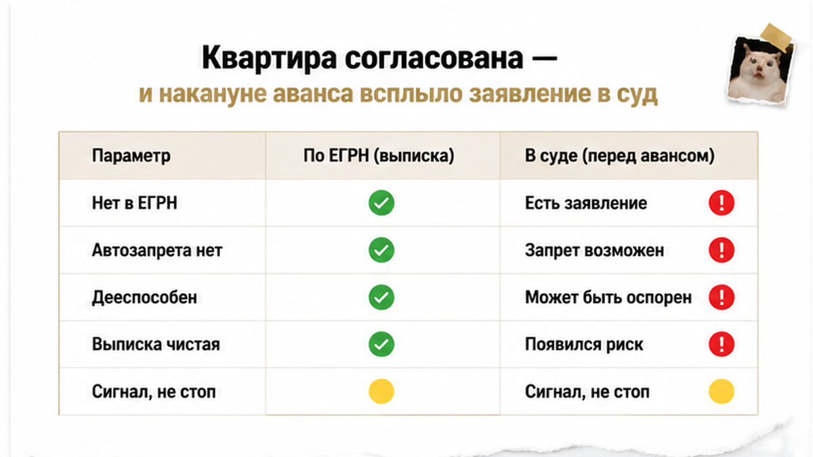
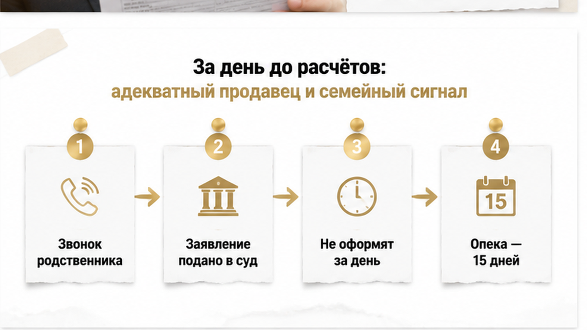
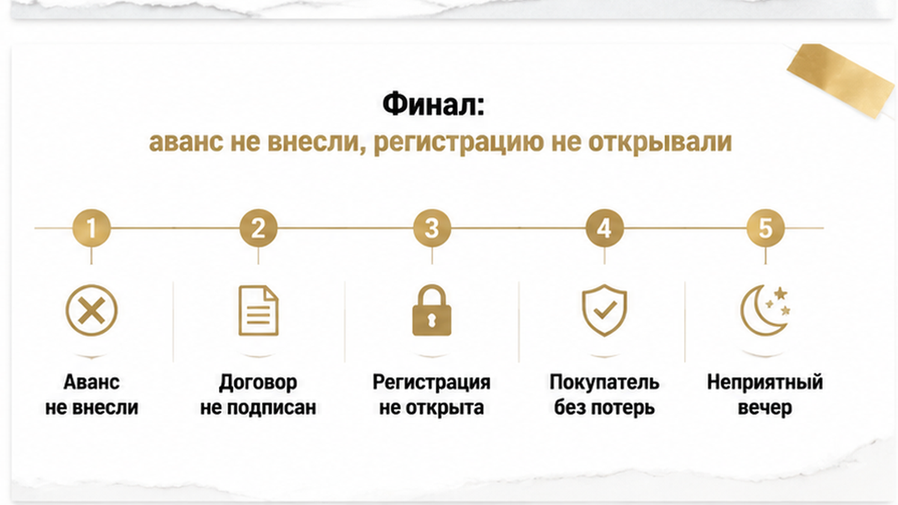
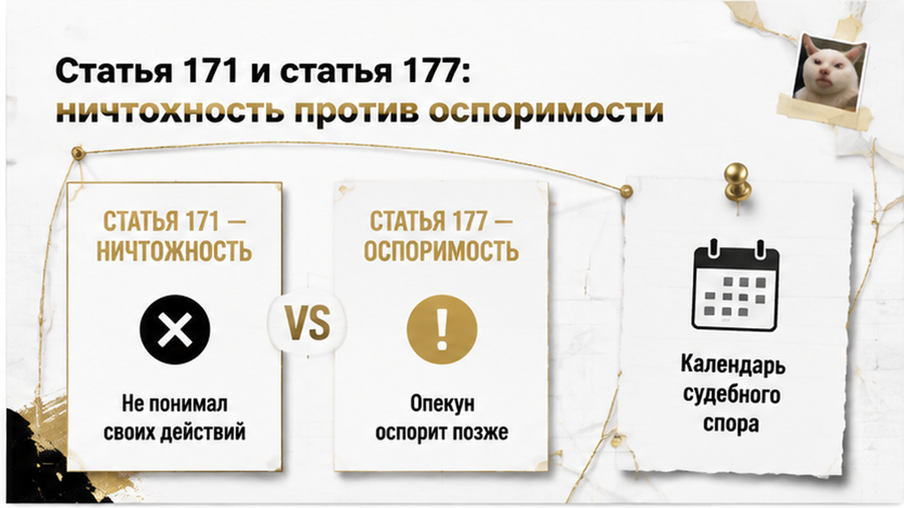
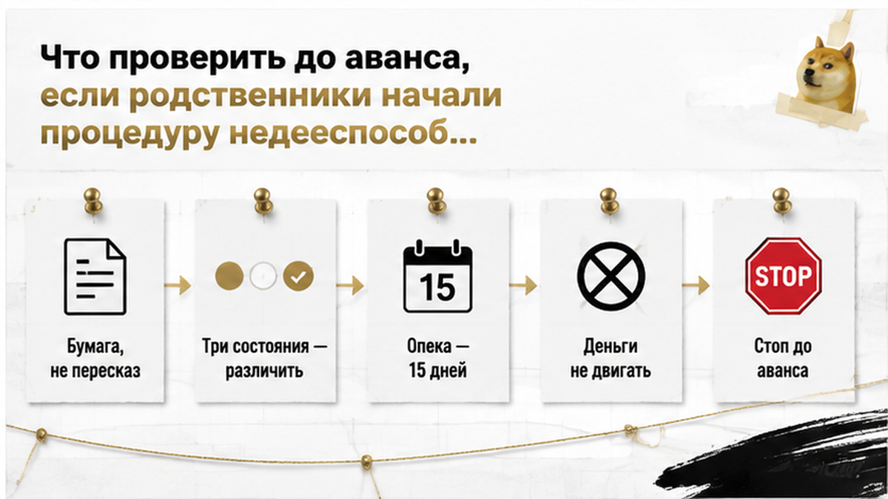

Квартиру в Тюмени сняли с расчётов за один рабочий день до аванса. К тому вечеру покупатель уже дважды был на осмотре, банк прошёл предварительную проверку, договор лежал распечатанным, деньги — на счёте. Продавец, пенсионер, вёл себя ровно: сам назвал цену, сам рассказал, куда переезжает, не торопил и не путался. А накануне расчётов выяснилось, что его родственники подали в суд заявление о признании его недееспособным — не решение суда, не опека, просто поданное заявление. Я остановил аванс в тот же день: договор не подписали, регистрацию перехода права не открывали, покупатель не потерял ни рубля. И самое неприятное здесь не заявление, а дистанция: оно всплыло в двадцати четырёх часах от денег.
Я Святослав Шакин, The Риэлтор, Тюмень. Веду вторичку так, чтобы стоп-факторы всплывали до аванса, а не после регистрации. Если у вас на руках согласованная квартира и вопросы к продавцу — напишите, разберём до денег: Telegram или MAX.

Площадь и планировка подошли, покупатель приезжал смотреть дважды, продавец не сбивал цену до неприличия и не просил ускорить расчёты. Банк по своей линии вопросов не выдал. К дате аванса картина была рабочая: понятный объект, один собственник, один паспорт, никаких экзотических оснований права.
Заявление в суд не пришло ни из выписки, ни из банковской проверки. Оно пришло из разговора с семьёй — и это принципиально. Подача заявления в суд не отражается в ЕГРН и не создаёт автоматического запрета на регистрацию. Красной пометки в документах на квартиру не появляется. Формально на дату аванса продавец оставался дееспособным: заявление — это начало судебной процедуры, а не установленный статус человека. Признать совершеннолетнего недееспособным вследствие психического расстройства может только суд, и лишь после вступления решения в силу устанавливается опека, а сделки от его имени начинает совершать опекун.
То есть стоп-документа у меня в тот день не было ни одного. Был сигнал.
По логике он очень похож на другой мой случай, где перед авансом внезапно всплыл скрытый реквизит и сделку пришлось останавливать в шаге от расчётов. Разница в том, что там документ существовал и его прятали, а здесь документа о статусе продавца ещё нет. Поэтому соблазн «успеть до решения» огромный — и именно поэтому он опасен.

Последний день выглядел так. Утром — финальная сверка договора и порядка расчётов. Днём — звонок родственника продавца.
«А можно всё приостановить?» — спрашивает он и начинает объяснять про здоровье, про семью, про то, что «мы против». В таких звонках всегда много эмоций и мало конкретики, поэтому я задаю один вопрос, который имеет значение: подано ли что-то в суд и принято ли заявление. Ответ утвердительный: заявление о признании продавца недееспособным подано.
Дальше — честность в формулировках, потому что здесь легко наговорить лишнего. Суд продавца недееспособным не признавал. Опекуна никто не назначал. «Опеку за день» не оформляют — это отдельная процедура, и даже опекун потом не сможет распорядиться недвижимостью подопечного без предварительного письменного разрешения органа опеки, а само такое заявление рассматривают пятнадцать календарных дней. На дату нашего аванса не было ни решения, ни опекуна, ни разрешения. Был начатый процесс.
И был продавец, который по-прежнему выглядел адекватно. Не путался в датах, не переспрашивал по десять раз, не выглядел испуганным.
Вот на этом обычно и ломаются покупатели: человек нормально разговаривает — значит, «всё в порядке». Но оценка сделкоспособности на глаз не имеет юридического веса. Возраст, диагноз или недовольство родни сами по себе ничего не доказывают, а состояние человека в конкретный момент подписания при спорах устанавливают судебно-психиатрической экспертизой. На глаз это не видно ни покупателю, ни мне.
Отдельно разведу сценарии, чтобы не путать. Это не тот случай, когда пожилого продавца дистанционно ведут по телефону и сделка останавливается из-за постороннего управления — такую историю я разбирал отдельно, там стоп-фактор был другой природы. Здесь продавец действовал сам, по своей воле. Риск создавала не третья сторона в трубке, а начатая процедура о его дееспособности.

Финал тихий. Аванс не внесли. Договор не подписали. Документы на регистрацию перехода права не сдавали. Покупатель забрал деньги со стола переговоров и остался с полной суммой на счёте — потерь ноль, кроме времени на осмотры и одного неприятного вечера.
Продавец при этом никем не «признан» и ни в чём не обвинён: чем закончится процедура, решит суд, и это не зона ответственности покупателя. Задача покупателя была другой — не стать той стороной, чья сделка потом окажется предметом спора. Потому что если человека признают недееспособным позже, назначенный опекун получает возможность поднять вопрос о ранней сделке, доказывая, что продавец не понимал значения своих действий именно в момент подписания. Такой спор тянется месяцами, и в нём покупатель не наблюдатель, а ответчик.
Это ровно та развилка, которую я вижу на вторичке чаще всего: стоп до аванса стоит одну неделю поиска, спор после регистрации — год суда. Дальше разберём, почему закон разводит эти ситуации по трём разным состояниям продавца и почему статья 171 и статья 177 Гражданского кодекса — совсем не одно и то же.
Когда на сделке звучит слово «недееспособность», покупатель слышит ровно одно: «продавать нельзя». А на деле за этим словом стоят три разных состояния, и последствия у них разные до противоположности.
Первое состояние — гражданина уже признал недееспособным суд. Только суд, только вследствие психического расстройства, и только после вступления решения в силу над человеком устанавливается опека. Дальше сделки от его имени совершает опекун. Но и опекун не хозяин положения: по пункту 2 статьи 37 ГК РФ он не вправе распоряжаться недвижимостью подопечного без предварительного письменного разрешения органа опеки. По Федеральному закону № 48-ФЗ заявление о таком разрешении рассматривают пятнадцать календарных дней. Это не справка, которую «донесут после регистрации».
Второе состояние — ограниченная дееспособность. Не «недееспособность лайт» и не половина первой. Здесь устанавливается попечительство, и набор действий другой. Я регулярно слышу на переговорах: «ну пусть попечитель подпишет, как опекун». Так нельзя. Разный статус — разные документы и разная зона риска, а подмена одного другим в договоре означает, что спор вы готовите себе сами.
Третье состояние — то самое, в котором мы оказались накануне аванса. Продавец формально дееспособен: решения суда нет, опекуна нет, а заявление родственниками уже подано. Автоматического запрета на регистрацию такое заявление не создаёт, Росреестр оно не блокирует и само по себе ничего не доказывает. Подача — это начало процедуры, а не установленный статус человека. Технически сделку можно довести до подписания — именно поэтому её и опасно доводить.
| Состояние продавца | Что требуется для продажи | Риск покупателя |
|---|---|---|
| Уже признан судом недееспособным | Действует опекун; на отчуждение нужно предварительное разрешение органа опеки | Если продавец подписал сам — ничтожность по пункту 1 статьи 171 ГК РФ |
| Ограниченно дееспособный | Попечительство; последствия иные, это не полная недееспособность | Другой статус — нельзя оформлять и трактовать его как полную недееспособность |
| Формально дееспособен, заявление в суд подано | На дату аванса решения и опекуна может не быть; автоматического запрета регистрации нет | Отложенный спор по статье 177 ГК РФ, если докажут состояние продавца в момент сделки |
Третья строка — самая коварная. В ней нет ни одного стоп-сигнала для техники сделки: выписка чистая, паспорт действующий, продавец говорит связно и по делу. Тот же механизм я разбирал в истории, где перед расчётами всплыл скрытый реквизит в семье продавца: документы не врали. Они просто молчали о том, что сделку потом будет кому оспаривать.

Разница между этими статьями простая: «сделки не было» против «сделку попробуют развалить позже».
Статья 171 ГК РФ включается, когда на дату подписания продавец уже был признан судом недееспособным. Его самостоятельная сделка ничтожна, стороны возвращают полученное. Доказывать покупателю ничего не надо — но радости мало: он оказывается в процедуре возврата денег, которые к этому моменту вполне могли уйти дальше по цепочке.
Статья 177 ГК РФ — другой сюжет. Продавец формально дееспособен, но в момент подписания не мог понимать значение своих действий. Такая сделка не ничтожна автоматически, она оспорима. И вот что покупателю важно услышать: ни возраст сам по себе, ни диагноз сам по себе, ни тем более обида родственников доказательством не работают. Нужно состояние человека именно на дату сделки, а при психическом расстройстве — экспертиза.
Дальше — та самая мина, из-за которой я снял аванс. Если продавца признают недееспособным позже, назначенный опекун может оспаривать более раннюю сделку по пункту 2 статьи 177 ГК РФ, доказывая, что человек не понимал значения своих действий уже тогда, когда ставил подпись. Заявление, поданное накануне расчётов, — это не эмоция. Это календарь будущего спора: есть дата, есть заявители, есть готовая линия доказывания.
Поэтому «чистая» выписка на дату осмотра — не индульгенция, а фотография одного дня. Я много раз показывал, как одобренная ипотека и безупречные документы не снимают отложенный риск: банк проверяет объект и вашу платёжеспособность, а не будущий иск от опекуна.
В обзоре Верховного суда РФ № 12/2026, утверждённом 1 июля 2026 года, есть три вещи, которые я разбираю с покупателями буквально по абзацам.
Первое — экспертиза. Уклонение от судебно-психиатрической экспертизы может повлечь отказ в иске, а суд не должен подменять её свидетельскими показаниями. Работает это в обе стороны. Линия «десять соседей расскажут, что дедушка был странный» спор сама по себе не выигрывает. Но и покупателю не стоит рассчитывать, что противоположная сторона просто не соберёт материал. Экспертиза — центр такого дела, и оценивают в ней состояние на дату сделки.
Второе — наследники. Позиция ВС РФ прямая: будущий наследник не может оспаривать сделку при жизни собственника только потому, что рассчитывал на наследство, — если собственник не признан недееспособным и истец не доказал нарушение своих прав. Это охлаждает половину «семейных» угроз, которые звучат на осмотрах голосом «мы это так не оставим».
И именно поэтому поданное заявление о недееспособности — красный флаг, а не пустой шум. Права оспорить сделку сегодня оно родственникам не даёт. Зато при последующем признании даёт опекуну готовое основание поставить вопрос по пункту 2 статьи 177, если состояние продавца на дату подписания будет доказано.
Третье — последствия проигранного спора. Вступившее в силу решение о недействительности сделки вместе с реституцией может восстановить запись о праве прежнего собственника и аннулировать переход права. Обратите внимание на формулировку: речь о записи в реестре, а не о том, что деньги сами прилетят обратно на счёт покупателя. И я не обещаю клиентам, что статус добросовестного приобретателя в любом случае сохранит за ними квартиру. Это вопрос доказывания в конкретном деле, а не гарантия на входе.

Первое, что я говорю покупателю в такой вечер: поданное заявление — не приговор продавцу и не запрет на сделку. Это всего лишь единственный момент, когда остановка стоит ноль рублей. После аванса она стоит переговоров, после расчётов — суда, экспертизы и лет ожидания.
И отдельно про пожилого продавца: судебное заявление — не единственный стоп-фактор. Бывает, что с дееспособностью формально всё в порядке, а решения за человека принимает голос в трубке — такую сделку под телефонным управлением мы тоже останавливали. Сценарии разные, признаки разные, а проверять стоит оба.
Вопрос, который я задаю покупателю в лоб. Если продавец выглядит адекватно, а родственники уже тянут опеку — вы всё равно внесёте аванс или будете ждать документы из суда? Напишите в комментариях, что сделали бы вы в тот вечер, когда договор уже распечатан и деньги на счёте.
Если вы сейчас на такой сделке и не понимаете, что означает бумага из суда, — напишите мне до аванса, разберём по документам: Telegram или MAX. Один вечер разбора дешевле одного платежа.
Тот же набор: пенсионер-продавец, чистая на дату осмотра выписка, вежливые переговоры. Только заявление родственников подано не за день до аванса, а через месяц после регистрации, когда деньги у продавца, а покупатель уже сбивает старую плитку в санузле.
Механика невесёлая. Если продавца признают недееспособным, опекун ставит вопрос о ранней сделке по п. 2 ст. 177 ГК РФ и доказывает состояние человека на дату подписания. Центр дела — судебно-психиатрическая экспертиза: по Обзору ВС РФ № 12/2026 от 01.07.2026 суд не должен заменять её свидетельскими показаниями, а уклонение от экспертизы может повлечь отказ в иске. Иногда это спасает покупателя. Иногда нет.
Если недействительность установлена и применена реституция, запись о праве прежнего собственника может быть восстановлена, а переход права аннулирован. Покупатель в этой точке — одновременно ответчик и взыскатель: квартиру возвращают, а свои деньги нужно получать с человека, за которого теперь действует опекун.
Разница между двумя версиями кейса — один рабочий день и одно решение не платить. Там, где деньги уже ушли, начинается другая работа: я видел, как это выглядит, когда расписку написали, а денег на счёте нет, и никакой юрист не возвращает потраченные на возврат месяцы.
Так что мой вывод из тюменской квартиры не про то, что вторичка — мина, и не про то, что пожилым продавцам нельзя верить. Он про ручку. Пока вы не перевели деньги, у вас есть право сказать «ждём документы» — и это право стоит дороже любого дисконта. Мы им воспользовались: аванс не внесли, регистрацию не открывали, покупатель ушёл с полной суммой и с возможностью спокойно купить другую квартиру.
Вторичку в Тюмени покупают — и покупают нормально. Её просто смотрят до денег, а не после: читают документы, задают неудобные вопросы, требуют бумагу вместо пересказа. Один остановленный платёж — это не сорванная сделка, это сохранённый выбор.